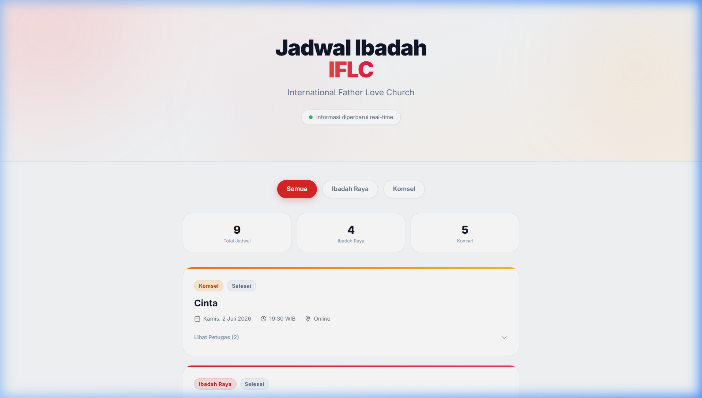
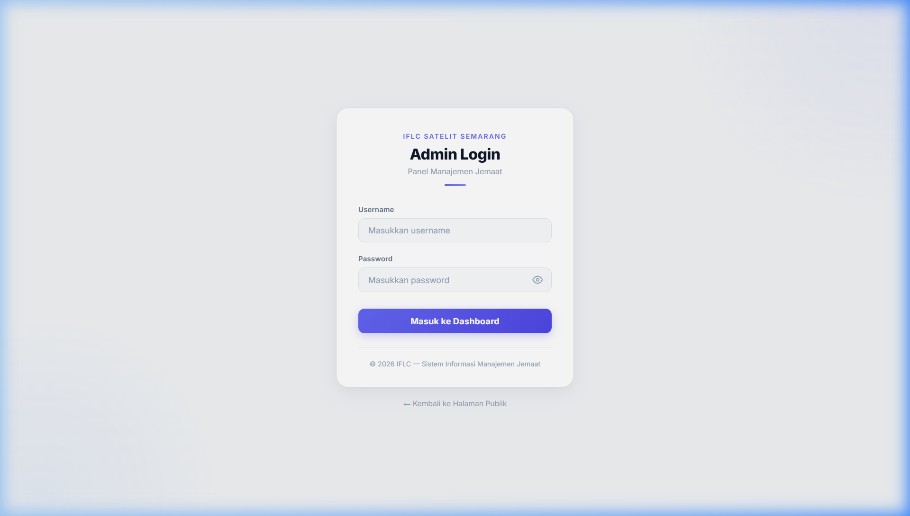
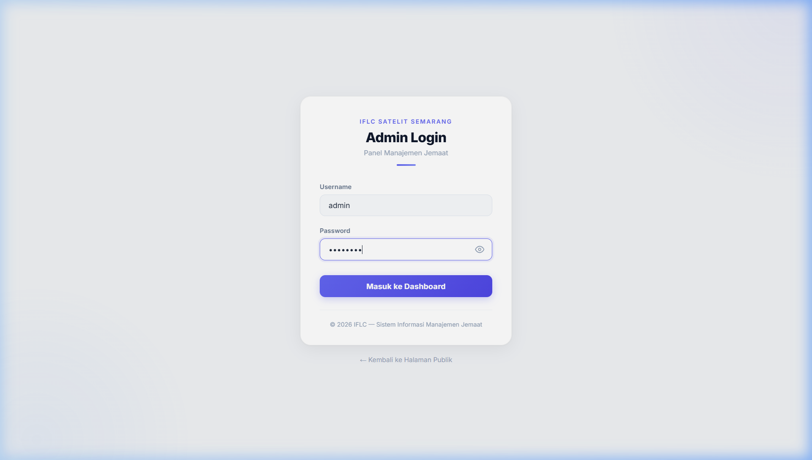
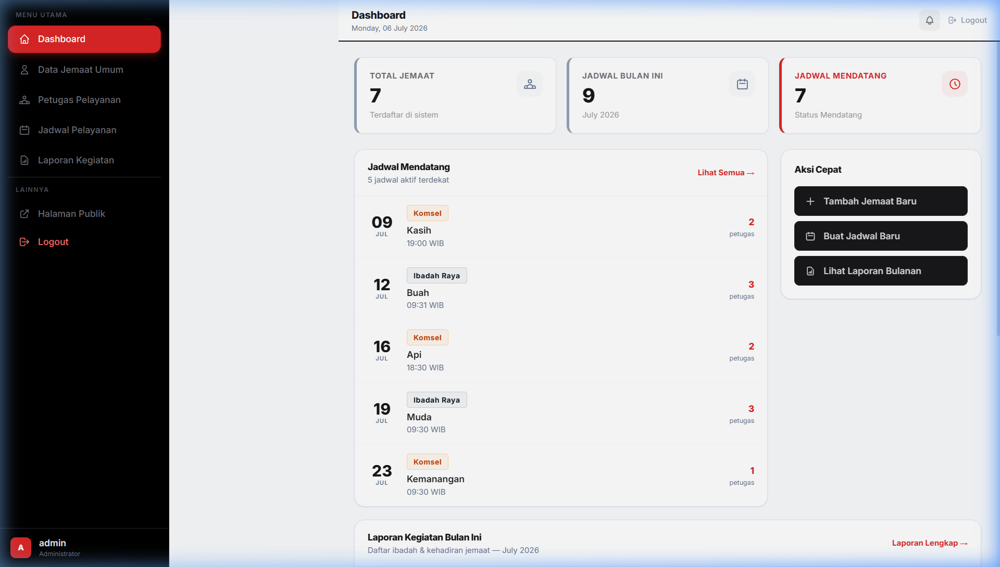
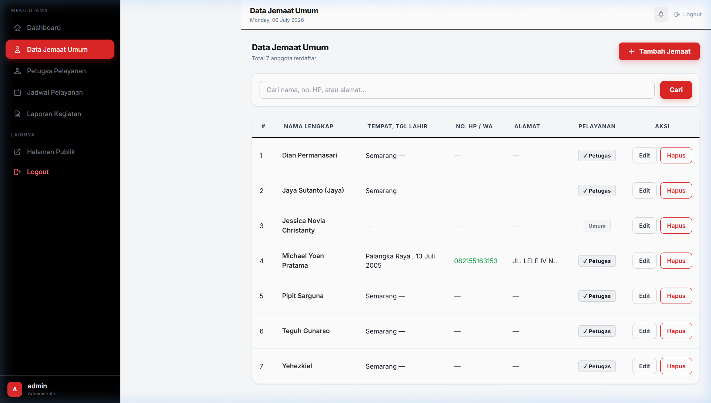
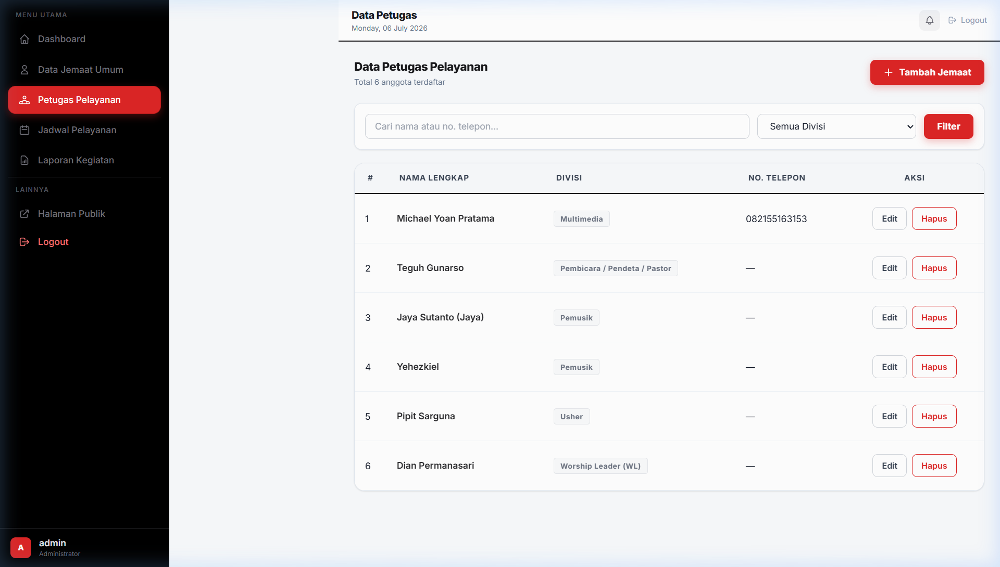
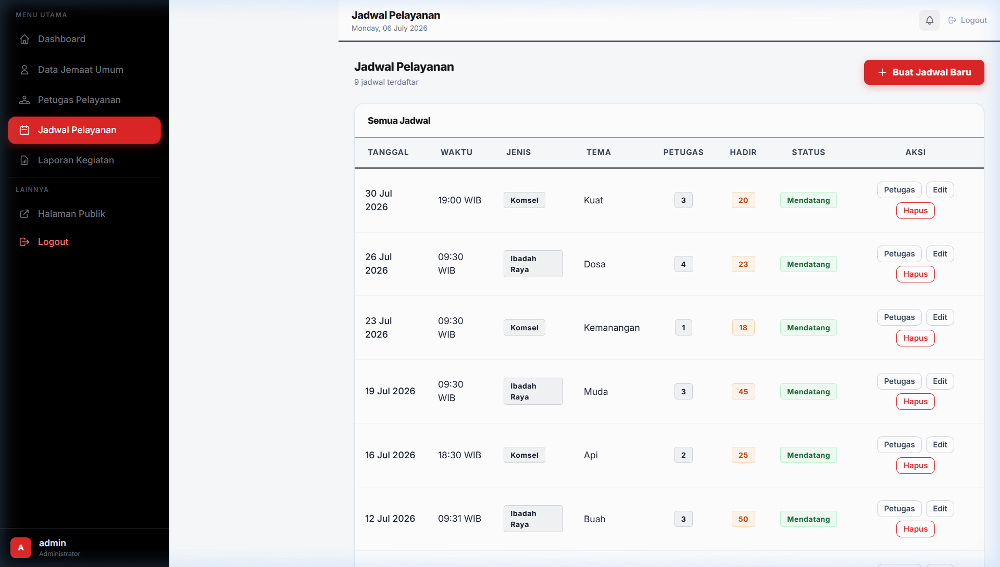
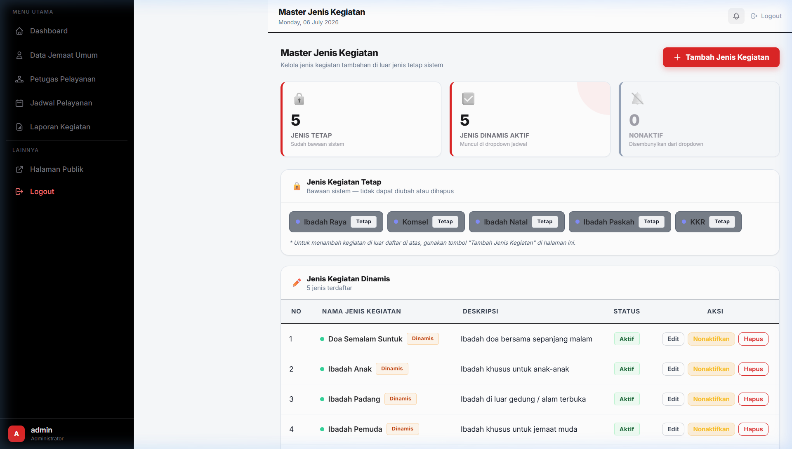
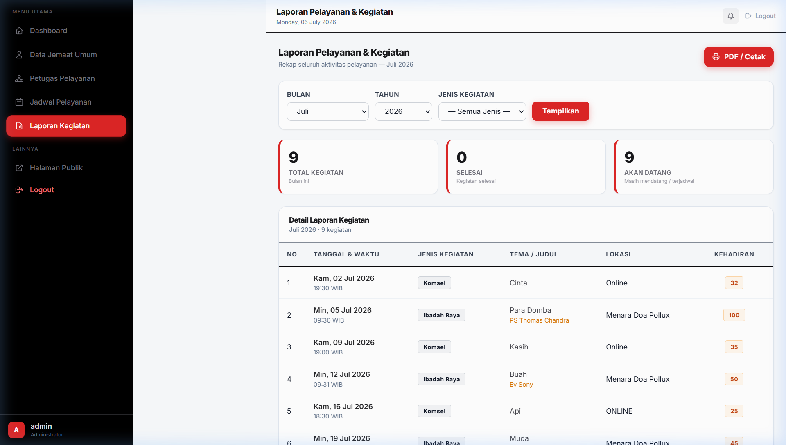

Daftar Isi
1. Cara Mengakses Aplikasi
Aplikasi SIMJ IFLC dapat diakses dari perangkat apa saja (laptop, komputer, atau smartphone) yang memiliki browser dan koneksi internet.
| Untuk Siapa | Alamat (URL) |
|---|---|
| Jemaat — melihat jadwal ibadah | https://jadwal-iflc.freedev.app/ |
| Admin — mengelola data & jadwal | https://jadwal-iflc.freedev.app/manajemen-iflc/login.php |
2. Halaman Publik — Melihat Jadwal Ibadah
Halaman ini ditujukan untuk seluruh jemaat. Tidak perlu login — cukup buka browser dan akses https://jadwal-iflc.freedev.app/

Gambar 2.1 — Tampilan halaman publik jadwal ibadah
Apa yang bisa dilakukan di halaman ini?
3. Login ke Admin Panel
Untuk mengelola data dan jadwal, admin perlu login terlebih dahulu.

Gambar 3.1 — Tampilan halaman login admin
Langkah Login
https://jadwal-iflc.freedev.app/manajemen-iflc/login.php

Gambar 3.2 — Form login yang sudah diisi username dan password
Username:
adminPassword:
admin123
4. Dashboard — Ringkasan Informasi
Dashboard adalah halaman pertama yang tampil setelah login. Di sini admin dapat melihat ringkasan seluruh data secara sekilas.

Gambar 4.1 — Tampilan Dashboard Admin
Informasi yang Ditampilkan
| Bagian | Penjelasan |
|---|---|
| Kartu Statistik | Total jemaat, jadwal bulan ini, jadwal mendatang, total divisi, dan total penugasan |
| Jadwal Mendatang | 5 jadwal ibadah terdekat beserta jumlah petugas yang sudah ditugaskan |
| Grafik | Distribusi persentase jenis kegiatan dalam 30 hari terakhir |
| Kegiatan Bulan Ini | Tabel lengkap kegiatan bulan berjalan dengan jumlah hadir dan pembicara |
Navigasi Menu (Sidebar Kiri)
Di sisi kiri layar terdapat sidebar hitam berisi menu navigasi. Klik salah satu untuk pindah halaman:
- 🏠 Dashboard — Halaman ini
- 👤 Data Jemaat Umum — Kelola data anggota jemaat
- 👥 Petugas Pelayanan — Kelola petugas & divisi
- 📅 Jadwal Pelayanan — Kelola jadwal ibadah
- 📊 Laporan Kegiatan — Lihat rekapitulasi
- 🌐 Halaman Publik — Buka halaman jemaat (tab baru)
- 🚪 Logout — Keluar dari admin
5. Mengelola Data Jemaat Umum
Menu ini digunakan untuk mencatat data seluruh anggota jemaat IFLC secara umum. Data ini menjadi sumber utama saat mendaftarkan petugas pelayanan.

Gambar 5.1 — Tampilan halaman Data Jemaat Umum
Menambah Jemaat Baru
- Nama Lengkap (wajib diisi)
- Tempat Lahir (opsional)
- Tanggal Lahir (opsional)
- No. HP / WhatsApp (opsional)
- Alamat (opsional)
Mengedit Data Jemaat
Menghapus Data Jemaat
6. Mengelola Petugas Pelayanan
Menu ini digunakan untuk mendaftarkan jemaat sebagai petugas pelayanan aktif dan menempatkannya ke divisi tertentu.

Gambar 6.1 — Tampilan halaman Petugas Pelayanan
Menambah Petugas Baru
Divisi Pelayanan yang Tersedia
- Worship
- Multimedia
- Penyambut Tamu
- Doa & Syafaat
- Anak & Remaja
- Keamanan
- Pendeta / Hamba Tuhan
7. Mengelola Jadwal Pelayanan
Ini adalah menu utama aplikasi. Di sini admin membuat jadwal ibadah dan menugaskan petugas yang bertugas.

Gambar 7.1 — Tampilan halaman Jadwal Pelayanan
Membuat Jadwal Baru
- Tanggal — Pilih tanggal pelaksanaan (wajib)
- Waktu — Isi jam mulai, contoh: 08:00 (wajib)
- Jenis Ibadah — Pilih dari dropdown: Ibadah Raya, Komsel, atau jenis lainnya (wajib)
- Tema — Tema khotbah / kegiatan (opsional)
- Lokasi — Tempat pelaksanaan (opsional)
- Pembicara Tamu — Nama pembicara jika ada (opsional)
- Jumlah Hadir — Diisi setelah kegiatan selesai (opsional)
Menugaskan Petugas ke Jadwal
⚠️ Clash Detection — Deteksi Bentrok Jadwal
Contoh:
- Samuel sudah ditugaskan di Ibadah Raya, 4 Mei 2026 jam 08:00 ✅
- Admin mencoba menugaskan Samuel di jadwal lain pada tanggal dan jam yang sama
- Hasil: ⚠️ Sistem menampilkan peringatan "Petugas Samuel sudah memiliki tugas di jam ini" dan menolak penugasan
Mengubah Status Jadwal
- Mendatang — Belum dilaksanakan (tampil di halaman publik)
- Selesai — Sudah selesai dilaksanakan
- Dibatalkan — Jadwal dibatalkan
8. Mengelola Jenis Kegiatan
Selain jenis ibadah tetap (Ibadah Raya, Komsel, dll.), admin bisa menambahkan jenis kegiatan baru yang akan muncul di dropdown saat membuat jadwal.

Gambar 8.1 — Tampilan halaman Master Jenis Kegiatan
Menambah Jenis Kegiatan Baru
9. Melihat Laporan Kegiatan
Menu laporan menampilkan rekapitulasi seluruh kegiatan ibadah dalam periode tertentu.

Gambar 9.1 — Tampilan halaman Laporan Kegiatan
Cara Melihat Laporan
Informasi yang Ditampilkan
- Tanggal & waktu setiap kegiatan
- Jenis ibadah
- Tema khotbah
- Status (Mendatang / Selesai / Dibatalkan)
- Jumlah petugas yang bertugas
- Jumlah kehadiran jemaat (jika sudah diisi)
10. Logout (Keluar)
Setelah selesai menggunakan admin panel, pastikan untuk logout:
11. FAQ — Pertanyaan Umum
Tidak bisa mengakses website
jadwal-iflc.freedev.app diketik dengan benar.
Username / password tidak bisa masuk
admin (huruf kecil semua) dan password admin123 dengan benar. Perhatikan huruf besar/kecil. Jika masih gagal, hubungi tim pengembang.
Jadwal tidak muncul di halaman publik
Petugas tidak bisa ditambahkan ke jadwal (muncul peringatan bentrok)
Tampilan website terlihat berantakan
Ctrl + Shift + R atau buka di browser lain.